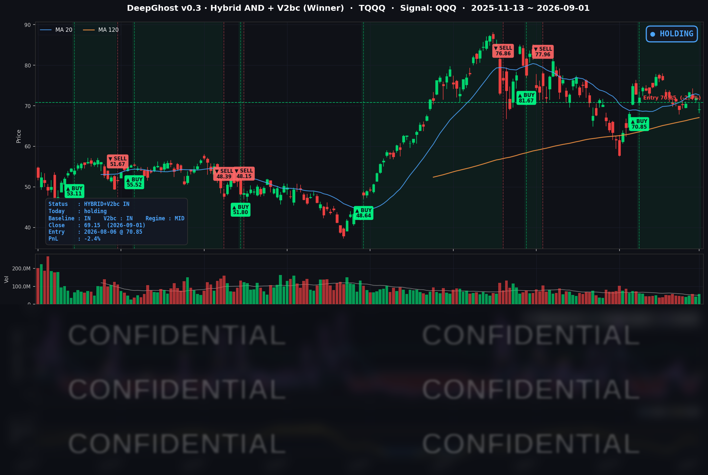

👻 매일 시그널과 히스토리를 홈페이지에서 한눈에 → www.ghostai.co.kr
미국이 이란 목표물을 다시 타격하면서 유가가 5.90% 뛰었고 10년물 국채 금리는 2025년 1월 이후 가장 높게 마감했습니다. 온갖 나쁜 뉴스들이 나오고 있습니다만, 흔들리지 마시고 룰대로만 하시기 바랍니다.
📊 오늘의 매매 신호
| 항목 | 내용 |
|---|---|
| 오늘 할 일 | ✅ 아무것도 안 해도 됩니다 |
| 포지션 상태 | 📈 TQQQ 보유 중 (IN POSITION) |
| 매수 진입일 | 2026-08-06 (19거래일째) |
| 진입가 → 현재가 | $70.85 → $69.15 |
| 현재 포지션 수익 | -2.40% |
TQQQ 시그널 — IN POSITION
현재 상태: 매수 포지션 유지 중 | 이번 포지션 수익률 -2.40%

나스닥100(QQQ)이 -1.27% 내렸고 TQQQ는 -3.85% 마감했습니다. 레버리지 배수대로 3.03배가 나왔습니다.
전략의 평가손익이 마이너스로 돌아섰습니다. 전일 +1.51%였던 수익률이 오늘 -2.40%입니다. 8월 6일 진입가 $70.85 대비 종가가 $69.15로, 하루 만에 3.9%p가 깎였습니다. 3배 레버리지 상품이라 기초지수의 1% 하락이 포지션에서는 3% 이상으로 나타납니다.
오늘 유가와 금리가 헤드라인을 채웠지만, 모델의 판단을 실제로 움직인 것은 나스닥100이 1% 남짓 내렸다는 사실 하나였습니다. 과거 데이터로 확인해 보면 유가가 하루 5% 넘게 뛴 다음 날이나 10년물이 크게 오른 다음 날의 지수 급락 확률은 평상시와 큰 차이가 없습니다. 뉴스가 요란한 날일수록 정작 중요한 것은 지수가 얼마나 빠졌는가입니다.
오늘 미국 시장 — 시황 요약
지수 마감
| 지수 | 종가 | 등락률 | 비교 기준 |
|---|---|---|---|
| S&P 500 | 7,631.47 | -0.71% | 전일 대비 |
| 나스닥 종합 | 26,099.77 | -1.03% | 전일 대비 |
| 다우존스 | 52,766.88 | -0.79% | 전일 대비 |
| 러셀 2000 | 2,920.13 | -1.23% | 전일 대비 |
| QQQ (나스닥100) | 707.64 | -1.27% | 전일 대비 |
| TQQQ | 69.15 | -3.85% | 전일 대비 |
기술주 하락은 개장 전에 이미 끝나 있었습니다. 나스닥은 전일 종가 대비 -1.29%로 갭 하락 출발한 뒤 장중에는 +0.26% 회복해 -1.03%로 마감했습니다. QQQ도 시가에서 종가까지 +0.03%로 제자리입니다. 밤사이 들어온 중동 뉴스와 채권 시장 약세를 개장과 동시에 반영한 뒤, 정규장에서 추가 매도가 이어지지는 않았습니다.
다우와 러셀 2000은 반대였습니다. 다우는 갭이 -0.19%에 그친 대신 장중에 -0.60% 밀렸고, 러셀 2000은 시가가 그날의 고가였습니다. 금리 상승에 민감한 대형 가치주와 소형주 쪽에서 장중 내내 약세가 이어졌다는 뜻입니다.
거래량은 QQQ가 20일 평균의 1.06배, SPY가 1.04배로 평상 수준이었습니다. 대량 매도가 몰린 하루는 아니었습니다.
국채 금리 동향
| 만기 | 수익률 | 전일 대비 |
|---|---|---|
| 3개월 | 3.772% | +4.0bp |
| 5년 | 4.557% | +5.0bp |
| 10년 | 4.796% | +3.8bp |
| 30년 | 5.268% | +1.9bp |
10년물 4.796%는 2025년 1월 13일 이후 가장 높은 종가입니다. 어제 기록한 연중 최고치(4.758%)를 하루 만에 다시 넘었습니다.
오늘은 곡선의 중간 구간이 가장 많이 올랐습니다. 최근 사흘을 합치면 5년물이 +16.1bp로 가장 크고 30년물은 +7.7bp에 그쳤습니다. 만기가 긴 쪽의 장기 성장·물가 전망이 바뀐 것이 아니라, 앞으로 몇 분기의 정책금리 경로가 위로 옮겨졌다는 뜻입니다. 9월 FOMC 인상 가능성이 가격에 들어온 결과입니다.
장단기 스프레드(10년−3개월)는 +102.4bp로 역전 없이 정상적인 우상향입니다. 곡선 전 구간이 역전 없이 위로 밀렸다는 것은, 채권 시장이 경기 침체보다 물가가 다시 문제가 됐다는 쪽에 무게를 두고 있다는 신호입니다. 유가 급등이 이 해석을 뒷받침합니다.
연준 발언 & 금리 패스
9월 1일 당일에 이뤄진 연준 위원의 공개 발언은 확인되지 않았습니다. 오늘 금리를 움직인 것은 새 발언이 아니라 지난 금요일(8월 28일) 잭슨홀 기조연설의 여파와 중동 뉴스입니다.
워시 의장은 연설에서 개인소비지출(PCE) 물가가 3.7%에 머물러 있음을 직접 언급하며 2% 목표가 "확고하고 고정된 목표(firm, fixed target)"라고 못 박았습니다. "근원 물가가 목표를 향해 충분한 속도로 움직이고 있다는 확신이 필요하며, 그렇지 않다면 우리에게는 해야 할 일이 남아 있다"는 문장도 함께 나왔습니다.
시장 반응은 분명합니다. 연설 전에는 9월 동결 확률이 70% 가까웠으나, 연설 직후 9월 15~16일 FOMC의 25bp 인상 확률이 57~66%대로 뒤집혔습니다. 인하가 아니라 인상을 저울질하는 국면입니다. 여기에 유가가 오르면 헤드라인 물가 경로가 위를 향하므로, 이번 주 남은 고용 지표가 강하게 나올 경우 인상 확률은 더 올라갈 수 있습니다.
오늘의 핵심 이슈
1. 미국의 이란 타격 재개로 유가가 하루에 5.90% 뛰었습니다. WTI는 90.82달러, Brent는 95.29달러로 마감했습니다. 사우디 선적과 한국 선주 소유 유조선 두 척이 피격됐고, 미군은 라라크섬의 이란 혁명수비대 로켓 발사대를 타격했습니다. 이란 최대 원유 수출 거점인 카르그섬까지 타격 대상으로 거론되면서 공급 차질 우려가 커졌습니다. 유가 상승은 곧 물가 경로 상향이라, 이 뉴스가 채권과 주식에 연쇄적으로 영향을 미쳤습니다.
2. 10년물 금리가 최고 종가를 기록하며 기술주 낙폭을 키웠습니다. 잭슨홀에서 나온 매파적 기조에 유가 급등이 얹혔습니다. 할인율에 민감한 고성장 기술주와 소형주가 가장 크게 내렸고(나스닥 -1.03%, 러셀 2000 -1.23%), 방어적 성격의 대형 가치주는 상대적으로 덜 내렸습니다(다우 -0.79%). 금리 민감도가 높은 자산일수록 더 내린 전형적인 금리 주도 하락입니다.
3. 애플이 CEO 교체 소식에 +2.61% 오르며 시장과 반대로 움직였습니다. John Ternus가 정식으로 CEO에 취임했고 Tim Cook은 이사회 의장으로 이동했습니다. 15년 만의 교체입니다. 애플은 종가가 당일 범위의 83% 지점에서 형성됐습니다. 커버리지 종목 중 오른 것은 애플과 메타 둘뿐이라, 개별 재료가 매크로 압력을 이긴 사례입니다.
변동성 & 투자심리
VIX는 16.34로 전일 14.92 대비 +9.52% 올랐습니다. 8월 4일 이후 가장 높은 종가입니다. 다만 2026년 중앙값 17.65보다는 아래라, 절대 수준에서 공포 국면이라고 보기는 어렵습니다. 낮은 자리에서 출발한 상승입니다.
공포탐욕지수는 49.57(중립)입니다. 지수가 내리고 VIX가 올랐지만 거래량은 평소 수준이었고 낙폭도 1%대에 머물렀습니다. 투매가 아니라 유가와 금리라는 두 변수를 반영한 조정으로 보는 것이 맞습니다. 다만 방향을 정하는 재료가 이번 주와 다음 주에 몰려 있어 변동성이 커질 여지는 있습니다.
매크로 & 원자재
| 품목 | 종가 | 등락률 | 비교 기준 |
|---|---|---|---|
| WTI 원유 | $90.82 | +5.90% | 전일 대비 |
| Brent 원유 | $95.29 | +5.30% | 전일 대비 |
| 금 선물 | $4,373.90 | -1.29% | 전일 대비 |
| 금 ETF (GLD) | $396.75 | -2.86% | 전일 대비 |
유가와 금이 반대로 움직인 점이 이날의 성격을 말해 줍니다. 지정학 위험이 커지면 보통 금도 함께 오르는데 오늘은 금이 내렸습니다. 금리 인상 기대가 커지면서 이자를 주지 않는 금의 상대적 매력이 떨어진 쪽이 지정학 수요보다 강했습니다. 안전자산 선호로 인한 하락이 아니라 금리 요인이 지배한 하락입니다.
경제 지표도 같은 방향을 가리켰습니다. 8월 ISM 제조업 PMI는 54.6으로 8개월 연속 확장이지만 확장폭은 둔화했고, 투입물가 지수가 71.1로 높은 수준을 유지했습니다. 기업이 겪는 원가 부담이 그대로라는 뜻이고, 여기에 유가 급등이 더해지면 앞으로 몇 달 물가 지표에 부담이 됩니다. 7월 JOLTS 구인건수는 727.1만으로 컨센서스(733~736만)를 밑돌았습니다.
주요 종목 동향
| 종목 | 종가 | 등락률 | 비고 |
|---|---|---|---|
| AAPL | 325.13 | +2.61% | John Ternus CEO 취임, Tim Cook 이사회 의장 이동 — 15년 만의 교체 |
| META | 578.54 | +1.08% | 커뮤니케이션 업종 상대 강세 |
| AVGO | 369.68 | -0.18% | 9/2 장 마감 후 FY26 3분기 실적 발표 앞두고 관망 |
| NFLX | 80.81 | -0.30% | 방어적 흐름, 낙폭 제한적 |
| INTC | 88.97 | -0.60% | |
| SPY | 761.78 | -0.69% | |
| MSFT | 501.02 | -1.24% | 금리 상승에 약세 |
| QQQ | 707.64 | -1.27% | 거래량 20일 평균의 1.06배 |
| GOOGL | 335.02 | -1.28% | |
| NVDA | 217.44 | -1.51% | 최근 사흘 누적 -4.62%로 커버리지 중 낙폭 최대 |
| AMZN | 254.92 | -1.87% | 금리 민감 대형 성장주 약세 |
| QCOM | 166.61 | -2.27% | 전일 +3.83% 상승분 되돌림 |
| MU | 933.44 | -2.64% | 전일 +2.77% 상승분 되돌림 |
| TSLA | 356.09 | -3.22% | 전일 +5.51% 상승분 되돌림, 고베타 약세 |
- 전일 급등했던 TSLA·QCOM·MU가 하루 만에 되돌렸습니다. 세 종목 모두 8월 31일에 개별 재료로 크게 올랐다가 오늘 그 상승분의 상당 부분을 반납했습니다. 새 악재가 확인된 것은 아니고, 금리 상승 국면에서 변동성이 큰 종목이 먼저 밀리는 흐름에 가깝습니다.
- 반도체 5종목(NVDA·MU·QCOM·AVGO·INTC) 평균은 -1.44%로 지수보다 부진했습니다.
- 이번 주 일정이 촘촘합니다. 9월 2일 ADP 민간 고용과 연준 베이지북, 같은 날 장 마감 후 브로드컴 실적, 9월 3일 ISM 서비스업, 9월 4일 고용보고서가 차례로 놓여 있습니다. 브로드컴 가이던스는 매출 약 294억 달러, 그중 AI 반도체 160억 달러입니다. 반도체 비중이 큰 나스닥100에는 직접 전달되는 이벤트입니다.
Ghost.AI — Quantitative AI Investment
Model: DeepGhost v0.3 | Transformer-Based Deep Learning
Coverage: 13 tickers | Updated every trading day after US market close
⚠️ 본 자료는 정보 제공 목적으로만 작성되었으며 투자 권유가 아닙니다. 모든 투자의 책임은 투자자 본인에게 있습니다. 과거 성과가 미래 수익을 보장하지 않습니다.
[유의사항]
- 본 서비스는 불특정 다수를 대상으로 발행되는 단방향 정보 제공 서비스이며, 투자자 개인의 재산 상황·투자 목적·위험 선호도를 반영한 개별 투자 조언이 아닙니다.
- 고스트에이아이 주식회사는 고객과 쌍방향 의사소통(개별 상담, 맞춤형 자문 등)을 제공하지 않습니다.
- 본 콘텐츠는 투자 권유 또는 매매 주문의 청약·청약의 권유에 해당하지 않으며, 최종 투자 판단 및 그에 따른 손익의 책임은 전적으로 투자자 본인에게 있습니다.
고스트에이아이 주식회사